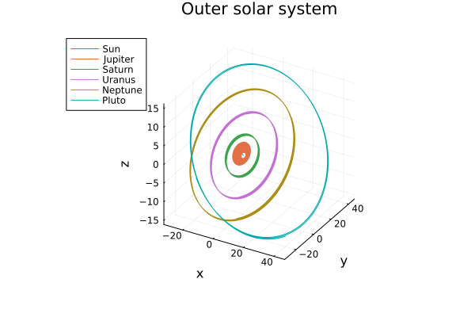

Simulating the Outer Solar System
Data
The chosen units are masses relative to the sun, meaning the sun has mass $1$. We have taken $m_0 = 1.00000597682$ to take account of the inner planets. Distances are in astronomical units, times in earth days, and the gravitational constant is thus $G = 2.95912208286 × 10^{-4}$.
| planet | mass | initial position | initial velocity |
|---|---|---|---|
| Jupiter | $m_1 = 0.000954786104043$ | [-3.5023653, -3.8169847, -1.5507963] | [0.00565429, -0.00412490, -0.00190589] |
| Saturn | $m_2 = 0.000285583733151$ | [9.0755314, -3.0458353, -1.6483708] | [0.00168318, 0.00483525, 0.00192462] |
| Uranus | $m_3 = 0.0000437273164546$ | [8.3101420, -16.2901086, -7.2521278] | [0.00354178, 0.00137102, 0.00055029] |
| Neptune | $m_4 = 0.0000517759138449$ | [11.4707666, -25.7294829, -10.8169456] | [0.00288930, 0.00114527, 0.00039677] |
| Pluto | $m_5 = 1/(1.3 × 10^8)$ | [-15.5387357, -25.2225594, -3.1902382] | [0.00276725, -0.00170702, -0.00136504] |
The data is taken from the book “Geometric Numerical Integration” by E. Hairer, C. Lubich and G. Wanner.
import OrdinaryDiffEq as ODE
using ModelingToolkit: System, t_nounits as t, D_nounits as D, @mtkbuild, @variables
using Symbolics: gradient
using Plots: plot, plot!
G = 2.95912208286e-4
M = [
1.00000597682,
9.54786104043e-4,
2.85583733151e-4,
4.37273164546e-5,
5.17759138449e-5,
1 / 1.3e8,
]
planets = ["Sun", "Jupiter", "Saturn", "Uranus", "Neptune", "Pluto"]
pos = [
0.0 -3.5023653 9.0755314 8.310142 11.4707666 -15.5387357
0.0 -3.8169847 -3.0458353 -16.2901086 -25.7294829 -25.2225594
0.0 -1.5507963 -1.6483708 -7.2521278 -10.8169456 -3.1902382
]
vel = [
0.0 0.00565429 0.00168318 0.00354178 0.0028893 0.00276725
0.0 -0.0041249 0.00483525 0.00137102 0.00114527 -0.00170702
0.0 -0.00190589 0.00192462 0.00055029 0.00039677 -0.00136504
]
tspan = (0.0, 200_000.0)(0.0, 200000.0)The N-body problem's Hamiltonian is
\[H(p,q) = \frac{1}{2} ∑_{i=0}^N \frac{p_i^T p_i}{m_i} - G ∑_{i=1}^N ∑_{j=0}^{i-1} \frac{m_i m_j}{\left\| q_i - q_j \right\|}\]
where each $q_i$ and $p_i$ is a 3-dimensional vector describing the planet's position and momentum, respectively.
Here, we want to solve for the motion of the five outer planets relative to the sun, namely, Jupiter, Saturn, Uranus, Neptune, and Pluto.
const ∑ = sum
const N = 6
@variables u(t)[1:3, 1:N]
u = collect(u)
potential = -G *
∑(
i -> ∑(j -> (M[i] * M[j]) / √(∑(k -> (u[k, i] - u[k, j])^2, 1:3)), 1:(i - 1)),
2:N
)\[ \begin{equation} - 0.00029591 ~ \left( \frac{3.3636 \cdot 10^{-13}}{\sqrt{\left( - u\_{1,4}\left( t \right) + u\_{1,6}\left( t \right) \right)^{2} + \left( - u\_{2,4}\left( t \right) + u\_{2,6}\left( t \right) \right)^{2} + \left( - u\_{3,4}\left( t \right) + u\_{3,6}\left( t \right) \right)^{2}}} + \frac{3.9828 \cdot 10^{-13}}{\sqrt{\left( - u\_{1,5}\left( t \right) + u\_{1,6}\left( t \right) \right)^{2} + \left( - u\_{2,5}\left( t \right) + u\_{2,6}\left( t \right) \right)^{2} + \left( - u\_{3,5}\left( t \right) + u\_{3,6}\left( t \right) \right)^{2}}} + \frac{2.1968 \cdot 10^{-12}}{\sqrt{\left( - u\_{1,3}\left( t \right) + u\_{1,6}\left( t \right) \right)^{2} + \left( - u\_{2,3}\left( t \right) + u\_{2,6}\left( t \right) \right)^{2} + \left( - u\_{3,3}\left( t \right) + u\_{3,6}\left( t \right) \right)^{2}}} + \frac{7.3445 \cdot 10^{-12}}{\sqrt{\left( - u\_{1,2}\left( t \right) + u\_{1,6}\left( t \right) \right)^{2} + \left( - u\_{2,2}\left( t \right) + u\_{2,6}\left( t \right) \right)^{2} + \left( - u\_{3,2}\left( t \right) + u\_{3,6}\left( t \right) \right)^{2}}} + \frac{2.264 \cdot 10^{-9}}{\sqrt{\left( - u\_{1,4}\left( t \right) + u\_{1,5}\left( t \right) \right)^{2} + \left( - u\_{2,4}\left( t \right) + u\_{2,5}\left( t \right) \right)^{2} + \left( - u\_{3,4}\left( t \right) + u\_{3,5}\left( t \right) \right)^{2}}} + \frac{7.6924 \cdot 10^{-9}}{\sqrt{\left( - u\_{1,1}\left( t \right) + u\_{1,6}\left( t \right) \right)^{2} + \left( - u\_{2,1}\left( t \right) + u\_{2,6}\left( t \right) \right)^{2} + \left( - u\_{3,1}\left( t \right) + u\_{3,6}\left( t \right) \right)^{2}}} + \frac{1.2488 \cdot 10^{-8}}{\sqrt{\left( - u\_{1,3}\left( t \right) + u\_{1,4}\left( t \right) \right)^{2} + \left( - u\_{2,3}\left( t \right) + u\_{2,4}\left( t \right) \right)^{2} + \left( - u\_{3,3}\left( t \right) + u\_{3,4}\left( t \right) \right)^{2}}} + \frac{1.4786 \cdot 10^{-8}}{\sqrt{\left( - u\_{1,3}\left( t \right) + u\_{1,5}\left( t \right) \right)^{2} + \left( - u\_{2,3}\left( t \right) + u\_{2,5}\left( t \right) \right)^{2} + \left( - u\_{3,3}\left( t \right) + u\_{3,5}\left( t \right) \right)^{2}}} + \frac{4.175 \cdot 10^{-8}}{\sqrt{\left( - u\_{1,2}\left( t \right) + u\_{1,4}\left( t \right) \right)^{2} + \left( - u\_{2,2}\left( t \right) + u\_{2,4}\left( t \right) \right)^{2} + \left( - u\_{3,2}\left( t \right) + u\_{3,4}\left( t \right) \right)^{2}}} + \frac{4.9435 \cdot 10^{-8}}{\sqrt{\left( - u\_{1,2}\left( t \right) + u\_{1,5}\left( t \right) \right)^{2} + \left( - u\_{2,2}\left( t \right) + u\_{2,5}\left( t \right) \right)^{2} + \left( - u\_{3,2}\left( t \right) + u\_{3,5}\left( t \right) \right)^{2}}} + \frac{2.7267 \cdot 10^{-7}}{\sqrt{\left( - u\_{1,2}\left( t \right) + u\_{1,3}\left( t \right) \right)^{2} + \left( - u\_{2,2}\left( t \right) + u\_{2,3}\left( t \right) \right)^{2} + \left( - u\_{3,2}\left( t \right) + u\_{3,3}\left( t \right) \right)^{2}}} + \frac{4.3728 \cdot 10^{-5}}{\sqrt{\left( - u\_{1,1}\left( t \right) + u\_{1,4}\left( t \right) \right)^{2} + \left( - u\_{2,1}\left( t \right) + u\_{2,4}\left( t \right) \right)^{2} + \left( - u\_{3,1}\left( t \right) + u\_{3,4}\left( t \right) \right)^{2}}} + \frac{5.1776 \cdot 10^{-5}}{\sqrt{\left( - u\_{1,1}\left( t \right) + u\_{1,5}\left( t \right) \right)^{2} + \left( - u\_{2,1}\left( t \right) + u\_{2,5}\left( t \right) \right)^{2} + \left( - u\_{3,1}\left( t \right) + u\_{3,5}\left( t \right) \right)^{2}}} + \frac{0.00028559}{\sqrt{\left( - u\_{1,1}\left( t \right) + u\_{1,3}\left( t \right) \right)^{2} + \left( - u\_{2,1}\left( t \right) + u\_{2,3}\left( t \right) \right)^{2} + \left( - u\_{3,1}\left( t \right) + u\_{3,3}\left( t \right) \right)^{2}}} + \frac{0.00095479}{\sqrt{\left( - u\_{1,1}\left( t \right) + u\_{1,2}\left( t \right) \right)^{2} + \left( - u\_{2,1}\left( t \right) + u\_{2,2}\left( t \right) \right)^{2} + \left( - u\_{3,1}\left( t \right) + u\_{3,2}\left( t \right) \right)^{2}}} \right) \end{equation} \]
Hamiltonian System
NBodyProblem constructs a second order ODE problem under the hood. We know that a Hamiltonian system has the form of
\[\dot{p} = -\frac{∂H}{∂q}, \quad \dot{q} = \frac{∂H}{∂p}\]
For an N-body system, we can simplify this as:
\[\dot{p} = -∇ V(q), \quad \dot{q} = M^{-1} p.\]
Thus, $\dot{q}$ is defined by the masses. We only need to define $\dot{p}$, and this is done internally by taking the gradient of $V$. Therefore, we only need to pass the potential function and the rest is taken care of.
eqs = vec(@. D(D(u))) .~ .-gradient(potential, vec(u)) ./ repeat(M, inner = 3)
@mtkbuild sys = System(eqs, t)
prob = ODE.ODEProblem(sys, [vec(u .=> pos); vec(D.(u) .=> vel)], tspan)
sol = ODE.solve(prob, ODE.Tsit5());retcode: Success
Interpolation: specialized 4th order "free" interpolation
t: 862-element Vector{Float64}:
0.0
0.4345623854592078
37.66991613821781
178.1955566153688
384.93835135668985
617.5641838240131
888.0863501585696
1225.1546319172062
1585.5835666904077
1959.96647933207
⋮
199468.68347493533
199539.68217760354
199615.2098678684
199684.80370935882
199759.8108831179
199826.2032295755
199899.07479264718
199968.43657244145
200000.0
u: 862-element Vector{Vector{Float64}}:
[-3.1902382, -10.8169456, -7.2521278, -1.6483708, -1.5507963, 0.0, -25.2225594, -25.7294829, -16.2901086, -3.0458353 … 0.00137102, 0.00483525, -0.0041249, 0.0, 0.00276725, 0.0028893, 0.00354178, 0.00168318, 0.00565429, 0.0]
[-3.190831391666314, -10.816773167663484, -7.251888638015288, -1.6475343823037847, -1.5516242540172815, -2.7777629886232516e-10, -25.223301179998256, -25.728985182525822, -16.289512746418094, -3.0437339894169093 … 0.0013712954942851254, 0.004835677090231295, -0.004121794983806699, -3.1048711440018414e-9, 0.002767325672882192, 0.0028892462117755886, 0.0035416394156575887, 0.0016819059109041002, 0.005657137663985553, -2.3461051313643855e-9]
[-3.2416336720962713, -10.801916544539612, -7.231198418490583, -1.5754981334747242, -1.6204974866722273, -2.1182406732676996e-6, -25.28666205244264, -25.686143822726788, -16.238013191679688, -2.8630075325890774 … 0.0013948530028021862, 0.004871229119062072, -0.0038498508985976877, -2.744696948353517e-7, 0.002773786169852182, 0.002884615335147782, 0.003529502186889962, 0.0015721896956419346, 0.0058941220964231844, -1.9651077465190322e-7]
[-3.432901395817574, -10.74439397897931, -7.1496143123477855, -1.2975188273076785, -1.840841083007574, -4.987919878773409e-5, -25.522242037482272, -25.521004693128383, -16.035798750200176, -2.1700251662166306 … 0.001482887370915072, 0.004986425464033878, -0.0027265971411446406, -1.38568856544693e-6, 0.002797747463422212, 0.0028667467004979807, 0.003482083654811132, 0.001148985294624198, 0.006654098622508434, -7.982634461324565e-7]
[-3.7129094270208562, -10.655606747882672, -7.019663997781774, -0.8738079889012164, -2.0364873145694906, -0.0002477194308176404, -25.858582745638294, -25.26817166523708, -15.716047531933883, -1.1262833137883643 … 0.0016098155945952224, 0.005099009115097594, -0.0008524483134184054, -3.2157265732506304e-6, 0.0028317802843332365, 0.002839337910375857, 0.00340776875658629, 0.000503992856283459, 0.007331233641935744, -1.2559120251268491e-6]
[-4.025856268502032, -10.549825634392532, -6.8596208847149, -0.3825021611575237, -2.0507541424069298, -0.0006719555624771953, -26.222315190566135, -24.969746265204623, -15.325319080274818, 0.06646670559681668 … 0.001748772698099999, 0.005140161219920683, 0.0014219029581089145, -5.408329991890065e-6, 0.0028683168998656977, 0.0028069163133506276, 0.0033178545457857728, -0.0002444606804939589, 0.007367307049127117, -1.070999279193048e-6]
[-4.386738501278141, -10.41905861563649, -6.655617044418156, 0.19698786596047257, -1.7805832307496217, -0.0014426076486808706, -26.625515707165473, -24.6043550397419, -14.830978495204798, 1.4502246493336441 … 0.0019049435039847145, 0.00506819798729678, 0.003981518203044377, -7.842231666167998e-6, 0.002908436343922019, 0.0027671310119269502, 0.003205226287291359, -0.001128476876643985, 0.0063527299424073575, 1.571426920907173e-7]
[-4.831418148497829, -10.244600624209827, -6.375500749639291, 0.9100284956395649, -1.057191637983965, -0.0027712658292415853, -27.097837787480167, -24.12187192826352, -14.157268833270349, 3.1178466059543077 … 0.002090875538902098, 0.004791818460751646, 0.006407009351165275, -1.0091845015232378e-5, 0.0029548200039524043, 0.0027144703736508456, 0.0030533411564984277, -0.002217420839884135, 0.0035874216218603474, 3.117755362160786e-6]
[-5.300269574961806, -10.044123953304739, -6.04563095337593, 1.6301607476922955, 0.01097541030935543, -0.004463284500937299, -27.56565218453489, -23.573156023506186, -13.369501330174733, 4.757313552738524 … 0.0022783992684984474, 0.004266434068189144, 0.0072394642311396475, -1.0749635509470926e-5, 0.00299995662785837, 0.0026544295861081865, 0.0028775669742245433, -0.0033153462137557516, -0.0005459291288215292, 7.3885397760603316e-6]
[-5.779374202106744, -9.820929050782473, -5.671710690722577, 2.293925035335003, 1.1098651571758467, -0.006188741537530517, -28.010509962687028, -22.96809298689486, -12.48206680280673, 6.215017875881588 … 0.0024601098829797117, 0.0034824097779980637, 0.005766603073366392, -9.132308037029578e-6, 0.00304193719704521, 0.0025880565001855193, 0.002681335454690004, -0.004318439890144197, -0.004707823850180569, 1.1660717607273077e-5]
⋮
[-15.123685531025545, 7.435548639701785, 7.076808875072606, -0.3208789887469669, -0.2447422129575491, -0.2476413851161261, -14.885523349407723, 19.53677413064485, 16.07361120682211, -1.6643926813737635 … -0.0011592468336917054, -0.005129448598011961, 0.013406312928352888, -1.3827076494503799e-5, 0.0017138198432346673, -0.002272459906909678, -0.0038067508826254482, 0.00035392943014752557, -0.0008039858801527655, 7.134436240154544e-6]
[-15.11408894728556, 7.497866267354939, 7.0437367582144175, -0.4724363069333276, 0.12489431408783377, -0.24803981233786096, -14.738061383963105, 19.679185046235183, 15.989446116777188, -2.0274728759578564 … -0.0012116171151511648, -0.005096931688471772, 0.00903267372259108, -9.657380465386646e-6, 0.0017026539423776604, -0.0022888369651643814, -0.0037903875665159198, 0.0005815402598242498, -0.010750822287715943, 1.656661159557288e-5]
[-15.103505928018496, 7.563679188737982, 7.006752465438275, -0.6332361255729819, 0.28487893924225255, -0.2482409886106189, -14.580834310336009, 19.829430364473787, 15.895837344423397, -2.4108364153099715 … -0.0012671434041962948, -0.005053099060775225, -0.0012045932140543833, 1.077579955623667e-7, 0.0016907765037159422, -0.0023061164580086336, -0.0037720043152924226, 0.0008209269070054027, -0.01471024891825856, 2.0278720906069088e-5]
[-15.093414262318761, 7.623879971414637, 6.9710334991271266, -0.7807575276932813, 0.1259794586595781, -0.2481339856404379, -14.435637211945389, 19.966722826120083, 15.805876903424785, -2.7608536039743172 … -0.0013181251875072542, -0.005004450698478656, -0.01036534845876616, 8.843426339531519e-6, 0.0016798331383389175, -0.002321907446214355, -0.003754176079602321, 0.0010386554717419665, -0.009869949176621819, 1.5595156325963532e-5]
[-15.082173967319298, 7.6882854255995765, 6.930780098422112, -0.938784696155286, -0.27728525928081993, -0.24779732060500645, -14.278804573416618, 20.113452026369664, 15.704953850047943, -3.1339875235579524 … -0.0013728609475378252, -0.004943357156177585, -0.013702051593249309, 1.2015084090651285e-5, 0.0016680398771028312, -0.0023387851267362915, -0.003734007242525834, 0.0012699088714945082, 0.0017035354039876952, 4.478970322207924e-6]
[-15.071911218423192, 7.744876765273257, 6.893635007408036, -1.0775984263115659, -0.6263148184285195, -0.24750709932701884, -14.139693301822023, 20.242246197254367, 15.612203503455838, -3.460188465239493 … -0.0014211147553212494, -0.00488197790707613, -0.008936787071462659, 7.450679675679392e-6, 0.0016576025475274429, -0.0023536010631170865, -0.0037153295595103706, 0.0014713557370686662, 0.01135283092407538, -4.7915670297684644e-6]
[-15.060309545967751, 7.806536677914343, 6.851233181051951, -1.2285679396853175, -0.7733410677894486, -0.24741424806792722, -13.986695710286062, 20.38243110334199, 15.506721596822596, -3.8132593965449657 … -0.0014738538713145158, -0.004806923658910764, 0.0015059709311462653, -2.538110113601323e-6, 0.0016461484371238012, -0.0023697286486101927, -0.0036939383442513326, 0.0016886265641199252, 0.014830862285731024, -8.174472110035812e-6]
[-15.04894004311049, 7.864782051129678, 6.80929329115863, -1.3706901867956218, -0.6071321575584757, -0.2476185364769549, -13.840769521121373, 20.514711347086276, 15.40275817822005, -4.143986622713134 … -0.0015238223544295122, -0.004728205915739112, 0.01046468273968508, -1.1111165930118657e-5, 0.001635247966901157, -0.0023849479679216574, -0.003672713787990312, 0.0018914320085943878, 0.00953246271822316, -3.1737216687064975e-6]
[-15.043661199011932, 7.891142425249738, 6.789699762545828, -1.4347957181380768, -0.45416718425818, -0.24778546531952908, -13.774270129087936, 20.57453193474648, 15.354303372382232, -4.292627204859818 … -0.0015464826168616044, -0.004690090204094209, 0.0127544838887821, -1.3306932565091807e-5, 0.0016302883613827383, -0.002391830899856846, -0.0036627771819432286, 0.0019823603904734442, 0.005096823020734848, 1.0352945608426354e-6]plt = plot(xlab = "x", ylab = "y", zlab = "z", title = "Outer solar system")
for i in 1:N
plot!(plt, sol, idxs = (u[:, i]...,), lab = planets[i])
end
plt